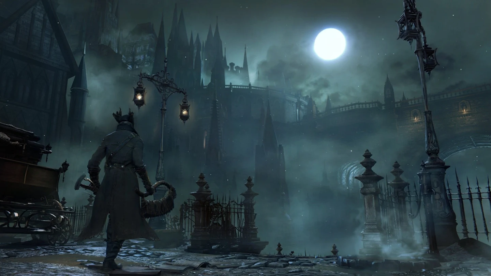

Action

Fast-paced gameplay that tests your reflexes and precision. Popular titles include Call of Duty and Doom.
Adventure

Explore new worlds, solve puzzles, and uncover stories. Examples include The Legend of Zelda and Uncharted.
Fighting

The fighting game genre centers on fast-paced, one-on-one or small-group combat. Examples include Street Fighter and Tekken.
Horror
These games typically use atmospheric design, sound cues, and unpredictable encounters to evoke an adrenaline rush.
Party

The gameplay is usually chaotic, humorous, and unpredictable, making them perfect for casual gatherings.
Puzzle

The puzzle video game genre focuses on problem-solving skills, logic, and pattern recognition.
RPG

The role-playing game (RPG) genre is centered around character development, immersive storytelling, and player choice.
Sandbox

Sandbox games typically focus on player-driven play, creativity, and emergent gameplay rather than predetermined paths.
Simulation

The Simulation video game genre focuses on replicating real-world systems, activities, or environments as accurately as possible